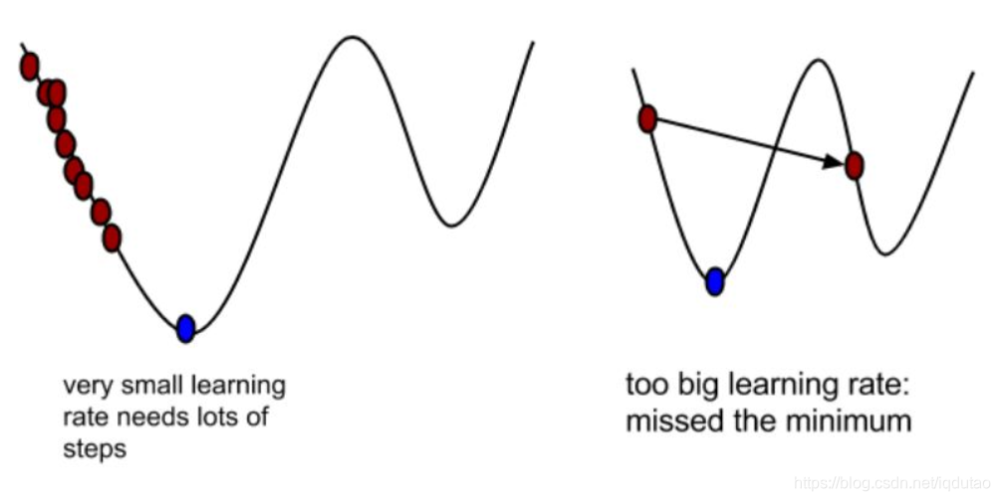
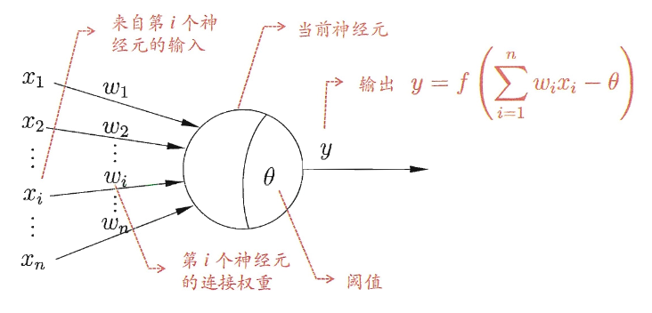
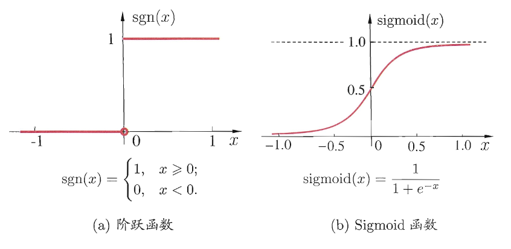
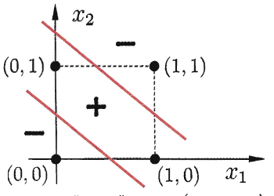
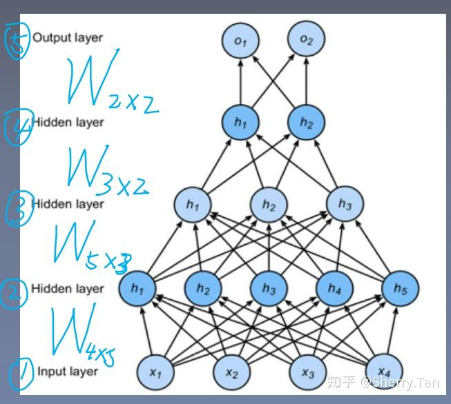
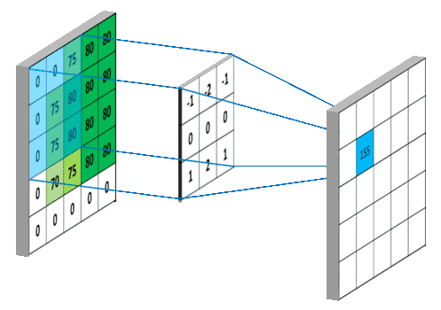

<div style="display: flex; justify-content: center; align-items: center; height: 700px;"> <div style="text-align: center; padding: 40px; background-color: white; border: 2px solid rgb(0, 63, 163); border-radius: 20px; box-shadow: 0 0 20px rgba(0,0,0,0.1);"> <h1 style="font-size: 48px; font-weight: bold; margin-bottom: 20px; color: #333;">SI100+ 2024 Lecture 9</h1> <p style="font-size: 24px; color: #666;">力大砖飞的时代——模型的转变</p> <p style="font-size: 16px; color: #999; margin-top: 20px;">SI100+ 2024 Staff | 2024-09-11</p> </div> </div> <!--s--> <div class="middle center"> <div style="width: 100%"> # Part.0 GPT(4)是怎样炼成的 </div> </div> <!--v--> ## GPT的诞生 正如我们第一节课所说，ChatGPT 是 2022 年末出生的。 <!-- .element: class="fragment" --> 但是，GPT 可不是。第一代 GPT 是 2018 年发布的，那时你们中的大部分人应该在小学六年级。 <!-- .element: class="fragment" --> <div class="fragment"> 六年之后，GPT 已经变成了当初的它完全不敢想象的样子~~免责声明：本人不是 GPT，不保证了解它的内心想法~~。每一代GPT模型的参数量都爆炸式增长，堪称“越大越好”。2019 年 2 月发布的 GPT-2 参数量为 15 亿，而 2020 年 5 月的 GPT-3，参数量达到了 1750 亿。从下面的参数量可以看出，这是个多么恐怖的模型。 <img src="assets/image.png" style="display: block; margin: 0 auto;"/> </div> - 最新的 GPT-4 在 120 层中总共包含了 1.8 万亿参数，规模是 GPT-3 的 10 倍以上 <!-- .element: class="fragment" --> <li class="fragment"> 这里有 <a href="https://bbycroft.net/llm">一个神奇的网站</a>，可视化地告诉了我们这个庞大的差距 </li> <!--v--> ## 问题来了 - 模型真的是参数越多越好吗？ <!-- .element: class="fragment" --> - 如果真是这样，我们的感知机能不能也变得更好？ <!-- .element: class="fragment" --> <li class="fragment"> 第三章开始，我们将正式进入21<del>生物学的</del>世纪。</li> <!--s--> <div class="middle center"> <div style="width: 100%"> # Part.1 Re：从零开始的 ML 学习 </div> </div> <!--v--> ## 回到线性回归 - 在上一节课中我们提到了线性回归，并用它引入了回归这一机器学习任务 <!-- .element: class="fragment" --> - 我们还是考虑简单的单变量（也就是 $x$ 只有一维）的线性回归， <!-- .element: class="fragment" --> <div class="fragment"> > 需要注意的是，虽然我们都把问题画在二维平面上，但是之前的感知机问题中的变量有两个，这个线性回归的变量只有一个。因为画线性回归的时候，$y$ 轴表示的实际上是因变量也就是结果。 </div> - 还记得高中的线性回归如何求解吗？最小二乘法求出经验回归方程: $\hat{y} = \hat{b} x + \hat{a}$ <!-- .element: class="fragment" --> - 为什么叫做最小二乘法？二乘：（残差的）平方；最小：使……最小 <!-- .element: class="fragment" --> - 即 $L = \frac{1}{2n} \sum_{i=1}^{n} (\hat{y}_i-y_i)^2$，求 $\min(L)$ <!-- .element: class="fragment" --> <!--v--> ## 度量损失的价值 我们再回顾一下机器学习的范式： - Step 1: 随机初始化参数； <!-- .element: class="fragment" --> <li class="fragment"> Step 2: 给模型输入训练集的数据，得到模型的输出，也就是<b>预测（prediction）</b> </li> <li class="fragment"> Step 3: 计算预测与真实结果的差距，也就是<b>损失（loss）</b> </li> - Step 4: 根据损失优化原来的参数 <!-- .element: class="fragment" --> - Step 5: 调整部分超参数，重新回到 Step 2，直到满足算法的终止条件 <!-- .element: class="fragment" --> 在线性回归这个问题中，损失是什么？<!-- .element: class="fragment" --> <ul> <li class="fragment"> 我们的目的是<b>最小化损失</b> </li> <li class="fragment"> 那损失是不是就可以定义为$L$？</li> <li class="fragment"> $L$是一个与真实值$y$和预测值$\hat{y}$都有关的函数 </li> <li class="fragment"> 这样的用来表示损失的函数，我们就称其为<b>损失函数（loss function）</b> </li> </ul> <!--v--> ## 度量损失的价值（cont'd） 问题来了，如何找到最小的 $L$？<!-- .element: class="fragment" --> <ul> <li class="fragment"> 这对于学过了三年高中数学的你可能非常简单：只需要<b>求导</b>就好了 </li> <li class="fragment"> 最小二乘法的求导一定能有解（不然高中提供的计算公式怎么来的呢）</li> <li class="fragment"> 对于类似这样的，因变量的解能被与自变量有关的初等函数直接表示的解，我们称之为<b>解析解/闭式解（analytic solution/closed-form solution）</b> </li> </ul> <div class="fragment"> > 闭式解的名字来源于初等函数的运算总是获得初等函数，也就是说初等函数的运算集满足闭包（closure）。 > > 在计算机的世界里，如果能用非初等函数表示一个解，或许也可以称之为解析解，因为对于计算机来说大多数时候初等函数与否都是直接用数值法去计算的。我们这里不作概念辨析~~辩经~~。 </div> <!--v--> <!-- 这里我不能确定是不是所有的线性回归都有解析解 --> ## 当然了，魔法世界里解析解是一种愿望 - 并不是所有的 ML 问题都有解析解，甚至大部分回归问题都没有准确的解析解 <!-- .element: class="fragment" --> - 事实上，高中的数学题里也可能没有解析解 <!-- .element: class="fragment" --> <div class="fragment"> > 例：（2017 年全国 II 卷）21. $f(x) = x^2 -x -x \ln x$. > 证明：$f(x)$ 存在唯一的极大值 $x_0$，且 $e^{-2}<f(x_0)<2^{-2}$ </div> - 经常做导数题的大家想必都知道，这是一道经典的隐零点问题 <!-- .element: class="fragment" --> - 求个导，令 $f'(x) = 2x - 2 - \ln x$，求解 $f'(x_0) = 0$ ，这里的 $x_0$ 显然是无法直接写成一个由初等函数表示的表达式的。 <!-- .element: class="fragment" --> - 怎么办呢？<!-- .element: class="fragment" --> <!--v--> ## 数值永远不会背叛你 <ul> <li class="fragment"> 当解析解不存在时，一个问题就只能用数值分析的方法求解近似值。这样找到的解被称为<b>数值解（numerical solution）</b>。</li> <div class="fragment"> > 比如五次以及更高次的代数方程，大多数偏微分方程，尤其是非线性偏微分方程。~~我复读资料不代表我懂这些方程~~ </div> <li class="fragment"> 求数值解的目的不在求出正确的答案，而是在其误差在一合理范围的条件下找到近似解。</li> <li class="fragment"> 有什么方法可以越来越逼近呢？</li> <ul> <li class="fragment"> 中学常见的有二分法、牛顿迭代法<del>真的常见吗</del> </li> <li class="fragment"> 他们有什么共同点？</li> </ul> </ul> <!--v--> ## 梯度下降法 想象一个这样的场景： <ul> <li class="fragment"> 一个人<del>房石阳明</del>被困在山上，需要从山上下来 </li> <li class="fragment"> 他需要找到山的最低点，也就是山谷 </li> <li class="fragment"> 但此时山上的浓雾很大，导致可视度很低，无法纵览整个下山路径（<del>休水的迷雾啊</del>）</li> <li class="fragment"> 因此，下山的路径就无法确定 </li> <li class="fragment"> 怎么办？</li> </ul> <!--v--> ## 梯度下降法 (cont'd) - 这个人决定利用自己周围的信息去找到下山的路径 <!-- .element: class="fragment" --> <li class="fragment"> 他尝试这么走：<b>以他当前的所处的位置为基准，寻找这个位置最陡峭的地方，然后朝着山的高度下降的方向走</b> </li> - 然后每走一段距离，再看一看当前所处位置，反复采用同一个方法 <!-- .element: class="fragment" --> <li class="fragment"> 最后或许就能成功的抵达山谷<del>离开休水</del> </li> <li class="fragment"> <del>另一种方式是多死几次找到正确的世界线</del> </li> <!--v--> ## 我们求导也可以不求解析解 这样一个听起来非常简单直接的思路，就是大名鼎鼎的梯度下降法（Gradient Descent） <!-- .element: class="fragment" --> - 模型的“好坏”（损失函数）是我们现在考虑的函数 <!-- .element: class="fragment" --> <li class="fragment"> <b>梯度就是函数的导数</b> </li> - “沿着梯度方向”就是函数变化趋势最快的方向 <!-- .element: class="fragment" --> <img src="assets/image-5.png" width="85%" style="display: block; margin: 0 auto;"/> <!-- .element: class="fragment" --> <!--v--> ## 梯度下降法（cont'd） <img src="assets/image-5.png" width="70%" style="display: block; margin: 0 auto;"/> 稍微总结一下： - Step 1: 明确自己现在所处的位置 <!-- .element: class="fragment" --> - Step 2: 找到相对于该位置而言下降最快的方向 <!-- .element: class="fragment" --> - Step 3: 沿着 Step 2 找到的方向走一小步，到达一个新的位置，此时的位置肯定比原来低 <!-- .element: class="fragment" --> - Step 4: 回到 Step 1，如此循环往复，直到终止于最低点 <!-- .element: class="fragment" --> <!--v--> ## 成为井底之蛙 - 梯度下降法一定能找到最优解吗？ <!-- .element: class="fragment" --> - 有没有一种可能，我们找到了一个“最低点”并且停止移动 <!-- .element: class="fragment" --> - 但是，有比我们当前遇到的“最低点”更低的，真正的最低点，但我们因为已经动不了了无法到达那边 <!-- .element: class="fragment" --> <li class="fragment"> 所以，梯度下降找到的是<b>局部最优（local optimum）</b>而非<b>全局最优（global optimum）</b> </li> - 在机器学习的实战中，我们往往需要调整超参数使模型找到更好的局部最优 <!-- .element: class="fragment" --> <!-- ## 数学上的解释 <p align = "center"> <img src="assets/image-6.png" width="500" /> </p> 定义如上图的公式，J是关于Θ的一个函数，我们在山林里当前所处的位置为$Θ^0$点，要从这个点走到J的最小值点，也就是山底。首先我们先确定前进的方向，也就是梯度$\bigtriangledown J(\theta )$的反向，然后走一段距离的步长，也就是α，走完这个段步长，就到达了$Θ^1$这个点。 <p align = "center"> <img src="assets/image-5.png" width="500" /> </p> ## 学习率 $\alpha$ <p align = "center"> <img src="assets/image-7.png" width="400" /> </p> * α在梯度下降算法中被称作为**学习率**，意味着我们可以通过α来控制每一步走的距离，以保证不要步子跨的太大，其实就是不要走太快，错过了最低点。同时也要保证不要走的太慢，导致太阳下山了，还没有走到山下。 * 所以**α的选择在梯度下降法中往往是很重要的**！α不能太大也不能太小，太小的话，可能导致迟迟走不到最低点，太大的话，会导致错过最低点！ <p align = "center">  </p> --> <!--s--> <div class="middle center"> <div style="width: 100%"> # Part.2 感知机的拓展：从二维到 $n$ 维 </div> </div> <!--v--> ## 再次回到感知机 - 在之前的课程中我们介绍了一个非常简单的感知机模型 <!-- .element: class="fragment" --> - 我们构造了一个“模型”来对一系列带有标记 $y$ 的点 $(x_1, x_2)$ 的集合 $\left\\{ (x_1^{(i)}, x_2^{(i)},y^{(i)}) \right\\}$ 进行二分类 <!-- .element: class="fragment" --> - 于是我们就能使用这个模型来预测别的点的类别了 <!-- .element: class="fragment" --> - 这个模型能接受两个输入（$x_1$ 和 $x_2$），并且提供一个输出 $y$，那么它就可以长这样： <!-- .element: class="fragment" --> <img src="assets/image-14.png" width="250" style="display: block; margin: 0 auto;"/> <!-- .element: class="fragment" --> <span> P.S. 看到箭头上的 $w_i$，你可能会对 **权重向量** $\boldsymbol{w}$ 有了更深的理解（权重值越大，该输入越重要）</span> <!-- .element: class="fragment" --> <!--v--> ## 感知机有几层？ <img src="assets/image-14.png" width="30%" style="display: block; margin: 0 auto;"/> - 一看就是两层：输入层，输出层 <!-- .element: class="fragment" --> - 输入层用来接受输入信号，并且传递给输出层 <!-- .element: class="fragment" --> - 输出层干了什么呢？ <!-- .element: class="fragment" --> - 我们知道 $\boldsymbol{w} \cdot \boldsymbol{x}$ 不一定是一个整数，但是不会有 “$0.114514$ 好的瓜” <!-- .element: class="fragment" --> <li class="fragment"> 因此它就像一个开关，将输入的信号 <b>两极化</b>，要么是 $1$，要么是 $0$ </li> - 输入信号……传递信号……有没有很熟悉？<!-- .element: class="fragment" --> - 兴奋在神经元上的传导！ <!-- .element: class="fragment" --> <!--v--> ## 这里也有神经元！ <div style="column-count:2"> - 生物神经网络中，每个神经元与其他神经元相连，当它“兴奋”时，就会向相连的神经元释放神经递质，从而改变这些神经元内的电位。 <!-- .element: class="fragment" --> - 如果某神经元的电位超过了一个“阈值”,那么它就会被激活，即“兴奋”起来，向其他神经元发送化学物质. <!-- .element: class="fragment" --> - 在刚刚的图中，每一个 ○→ 都是一个神经元（neuron），接收别的神经元的信号，这些输入信号通过带权重的连接 (connection) 进行传递，总输入值超过该神经元的阈值 (threshold) 就会 “兴奋” <!-- .element: class="fragment" -->\ > 这里的“阈值”相当于直线的截距。后续我们可能会用偏置（bias）来指代它。 - 这就是 “M-P 神经元模型” (1943，M和P是两个人名) <!-- .element: class="fragment" --> - 基于这个模型，感知机得以诞生 <!-- .element: class="fragment" --> <img src="assets/image-15.png" width="400" style="display: block; margin: 0 auto;"/> </div> <!--v--> ## 还可不可以更劲爆点？ - 这个模型只接受二维 $(x_1,x_2)$ 的输入，思考一下，如果输入是三个，四个，乃至 $n$ 个呢？ > 也就是说，三维，四维到 $n$ 维  <!-- .element: class="fragment" --> <div style="column-count:2"> <ul> <li class="fragment"> 这里的 $f$ 是一个 <b>激活函数</b>，顾名思义，<b>理想中</b>用来将传入的总输入值与阈值的差映射到 $0$, $1$ ，用来判断是否激活，如右图左的<b>阶跃函数</b>。</li> <li class="fragment"> 但其实它并不常见，因为它的函数不连续也不光滑，更常见的是如右图右的 Sigmoid 函数，我们不多做介绍 </li> </ul>  <!-- .element: class="fragment" --> </div> <!--s--> <div class="middle center"> <div style="width: 100%"> # Part.3 深度神经网络的诞生：多层感知机（MLP） </div> </div> <!--v--> ## 可以更广，也可以更深！ - 刚刚我们在输入层面拓展了感知机模型，使之可以接受若干个输入 <!-- .element: class="fragment" --> - 那我们是否也可以给感知机堆叠层数使之更加复杂呢？ <!-- .element: class="fragment" --> - 在生物学上非常容易理解：我们让多个神经元头尾相接！就可以构成一个有更多功能的神经网络！ <!-- .element: class="fragment" --> <li class="fragment"> 为此，我们引入<b>多层感知机</b>（Multi-Layer Perception）</li> <!--v--> ## 多层感知机 - 还记得我们的最开始的感知机不能解决的问题吗，这其实是计算机界大名鼎鼎的**异或（XOR）**~~真的大名鼎鼎吗，鉴定为学编程学的~~  <!-- .element: class="fragment" --> - 这不是线性可分的问题！也就是我们无法画一条线分开所有的正点和负点！ <!-- .element: class="fragment" --> - 但是，再加一层神经元就可以 😉 <!-- .element: class="fragment" --> <img src="assets/image-19.png" width="500" style="display: block; margin: 0 auto;"/> <!-- .element: class="fragment" --> <!--v--> ## 太神奇了！ - 我们只添加了一层就解决了这个问题 <!-- .element: class="fragment" --> <img src="assets/image-19.png" width="500" style="display: block; margin: 0 auto;"/> <!-- .element: class="fragment" --> <ul> <li class="fragment"> 添加的这一层叫做<b>隐藏层（hidden layer）</b> </li> <ul> <li class="fragment"> 它既不是输入也不是输出，我们没有办法直接观测到，就像被藏起来了一样 </li> </ul> <li class="fragment"> 隐含层和输出层神经元都是拥有<b>激活函数</b>的功能神经元</li> - 输入层神经元仅是接受输入，不进行函数处理，因此在计算层数的时候通常忽略输入层 <!-- .element: class="fragment" --> </ul> <!--v--> ## 层级结构 - 当我们把层堆起来时，这个模型看起来就跟网络一样 - 所以我们通常会叫它**神经网络（neural network）** - 在神经网络发展的早期，它通常是下图所示的层级结构 - 每层神经元与下一层神经元 **全互连**，神经元之间**不存在同层连接**，也**不存在跨层连接** > 以后的神经网络可能会打破一些限制。 - 输入层神经元接收外界输入，隐藏层与输出层神经元对信号进行加工，最终结果由输出层神经元输出 <p align = "center">  </p> <!--v--> ## 神经网络学习的本质 <div class="fragment"> 神经网络的学习过程，就是根据训练数据来调整神经元之间连接的**权重（weight，也可以说是参数）**（和偏置（bias，其实也算是参数的一部分））。 > 机器学习里经常有一些名词混用，比如权重和参数混用，这里大家意会就好。 <span> 这里有一个[小的在线演示](https://playground.tensorflow.org/#activation=tanh&batchSize=29&dataset=xor®Dataset=reg-plane&learningRate=0.03®ularizationRate=0&noise=0&networkShape=2,1&seed=0.54302&showTestData=false&discretize=false&percTrainData=50&x=true&y=true&xTimesY=false&xSquared=false&ySquared=false&cosX=false&sinX=false&cosY=false&sinY=false&collectStats=false&problem=classification&initZero=false&hideText=false)，我们可以感性且直观地理解一下训练模型的过程 </span> <!-- .element: class="fragment" --> <!-- - 首先它与输入层是全连接的，类似于简单的感知机结构，假设输入层用向量 $X$ 表示，则隐藏层的输出就是 $f (W_1X+b_1)$，$W_1$是权重（也叫连接系数），$b_1$ 是偏置， --> <!-- 函数 $f$ 可以是 **激活函数** (常用的sigmoid函数，tanh函数，RELU函数等) --> - 激活函数？解决了感知机只能进行线性分类的问题 <!-- .element: class="fragment" --> - 不使用激活函数，每一层输出都是上层输入的线性函数，无论神经网络有多少层，输出都是输入的线性组合。 <!-- .element: class="fragment" --> - 使用激活函数，能够给神经元引入非线性因素，使得神经网络可以任意逼近任何非线性函数，这样神经网络就可以利用到更多的非线性模型中。 <!-- .element: class="fragment" --> <!--v--> ## MLP 的简单训练过程 <div class="fragment"> 训练的过程就是一个优化参数的过程。 - 刚刚我们看到的都是数据单向地从输入不断流向下一层，最终流向输出。 - 这个过程叫做**前向传播 (Forward Propagation, FP)**：输入层数据开始从前向后，数据逐步传递至输出层 - 为了优化我们的权重，现代的神经网络还会有另外一个步骤：**反向传播 (Backpropagation, BP)** - 怎么优化权重？ - **梯度下降** - 反向传播：损失函数开始从后向前，梯度逐步传递至第一层。反向传播用于权重更新，使网络输出更接近标签 > 不过，如果有人跟你介绍反向传播算法，它可能指的是包含了前向传播和反向传播两个过程的算法。~~我们自然语言是这样的~~ <!-- - 在反向传播中，会使用**梯度下降法**更新参数以减小损失函数的值 --> </ul> <!--s--> <div class="middle center"> <div style="width: 100%"> # Part.4 走向模块化的神经网络 </div> </div> <!--v--> ## 层和块 - 我们刚刚已经做出了一个理想中的神经网络小部件了！ - 它是一个 XOR 小部件，可以：接受 2 个输入，产生 1 个输出！ - 那我们可不可以封装一下，让它变成一个“黑盒子”，我们只需要拿来用就行，而不用再关心里面的实现了？ - 当然可以！ <img src="https://zh.d2l.ai/_images/blocks.svg" width="700" style="display: block; margin: 0 auto;"/> <!-- * 之前首次介绍神经网络时，我们关注的是具有单一输出的线性模型（感知机）。 在这里，整个模型只有一个输出。 注意，单个神经网络 （1）接受一些输入； （2）生成相应的输出； （3）具有一组相关参数（parameters），更新这些参数可以优化某目标函数。 * 对于多层感知机而言，我们可以认为整个模型及其组成层都是这种架构 --> <!-- ## 层和块 * 对于多层感知机而言，我们可以认为整个模型及其组成层都是这种架构 * 整个模型接受原始输入（特征），生成输出（预测）， 并包含一些参数（所有组成层的参数集合）。 同样，每个单独的层接收输入（由前一层提供）， 生成输出（到下一层的输入），并且具有一组可调参数， 这些参数根据从下一层反向传播的信号进行更新。 <p align = "center"> <img src="assets/https://zh.d2l.ai/_images/blocks.svg" width="700" /> </p> --> <!--v--> ## 层和块 - 为了更好的实现更加复杂的网络，我们引入了神经网络块的概念。 - **块 (block)** 可以描述单个层、或多个层组成的组件，甚至整个模型本身！使用块进行抽象的一个好处是可以将一些块组合成更大的组件，使我们可以通过更简洁的代码实现复杂的神经网络。 - 块的概念十分宽泛，MLP 的任意一层可以看成一个**块**，整个MLP 也能看做一个**块** <img src="https://zh.d2l.ai/_images/blocks.svg" width="700" style="display: block; margin: 0 auto;"/> <!--v--> ## 让模型更好：一味的加大？ - 还记得[之前的分类问题吗](https://playground.tensorflow.org/#activation=tanh&batchSize=12&dataset=xor®Dataset=reg-plane&learningRate=0.03®ularizationRate=0&noise=0&networkShape=2,1&seed=0.08309&showTestData=false&discretize=false&percTrainData=50&x=true&y=true&xTimesY=false&xSquared=false&ySquared=false&cosX=false&sinX=false&cosY=false&sinY=false&collectStats=false&problem=classification&initZero=false&hideText=false) - [多加几个神经元](https://playground.tensorflow.org/#activation=tanh&batchSize=10&dataset=xor®Dataset=reg-plane&learningRate=0.03®ularizationRate=0&noise=0&networkShape=4,2&seed=0.21815&showTestData=false&discretize=false&percTrainData=50&x=true&y=true&xTimesY=false&xSquared=false&ySquared=false&cosX=false&sinX=false&cosY=false&sinY=false&collectStats=false&problem=classification&initZero=false&hideText=false) - [多来几层](https://playground.tensorflow.org/#activation=tanh&batchSize=10&dataset=xor®Dataset=reg-plane&learningRate=0.03®ularizationRate=0&noise=0&networkShape=4,2,2&seed=0.21815&showTestData=false&discretize=false&percTrainData=50&x=true&y=true&xTimesY=false&xSquared=false&ySquared=false&cosX=false&sinX=false&cosY=false&sinY=false&collectStats=false&problem=classification&initZero=false&hideText=false) - 早期大家的思路和大家一样，力大砖飞！ <!--s--> <div class="middle center"> <div style="width: 100%"> # Part.5 深度学习的发展：研究方向的细分和新模型的提出 </div> </div> <!--v--> ## 深度学习的发展 - 模型似乎不能一味的加大了 - 模型变大了，效果没有变好？ - 除了一些训练技巧之外，能不能从模型本身解决问题？ - 研究领域出现细分 - 随着深度学习的发展和研究方向的细化，CV（计算机视觉，computer vision）和 NLP（自然语言处理，Natuarl Language Processing）成为深度学习发展最迅速、最具前景的两大分支 - 需要新的架构出现了！ <!--v--> ## CNN 网络架构：有感受野、可并行 - CNN，即卷积神经网络（Convolutional Neural Networks），是一种专门用于处理具有类似网格结构数据（比如图像）的深度学习模型。 - 图片通常需要 **整体理解**，CNN 利用卷积核（也称为滤波器或 kernel）在输入图像上进行滑动窗口操作，来获取 **“感受野”** 范围内数据之间的关系特征。一张图片里，相邻的像素显然是有更强的相关性，相比于 MLP，CNN 突出了这种 **相邻的关系特征**，因而更加准确的获取了图片内的有用信息。  <!--v--> ## RNN 网络架构：长距离特征的提取 - RNN，即循环神经网络/递归神经网络（Recurrent Neural Networks），是一种用于处理序列数据（如语言）的深度学习模型。 - 理解句子需要 **结合上下文**，而普通的神经网络缺乏 **记忆能力**，因此在处理序列数据时表现不佳。例如，你要预测句子的下一个单词是什么，一般需要用到前面的单词，因为一个句子中前后单词并不是独立的。 - RNN 之所以称为循环神经网路，即一个序列当前的输出与前面的输出也有关。具体的表现形式为网络会对前面的信息进行记忆并应用于当前输出的计算中。 <img src="assets/image-13.png" width="400" style="display: block; margin: 0 auto;"/> <!--v--> ## 成功的模型们 <ul> - `PyTorch` 的 `TorchVision` 项目，包含了一些表现优异的、关于计算机视觉的神经网络架构，我们介绍一下其中两个代表性的 CNN 模型 <!-- .element: class="fragment" --> - AlexNet: 它是在图像识别方面早期具有突破性的网络之一。在 2012 年的 ILSVRC 中以较大的优势胜出，前 5 名的测试错误率（也就是说，正确的标签必须在前 5 名中）为 15.4%。相比之下，没有深度网络的次好作品仅占 26.2%。这是计算机视觉历史上的一个关键时刻：此刻，社区开始意识到深度学习在视觉任务中的潜力。随之而来的是不断的改进，更现代的架构和训练方法使得前 5 名的错误率低至 3%。<!-- .element: class="fragment" --> - ResNet(残差网络): 它在 2015 年的 ILSVRC 中获胜。目前ResNet架构仍然是许多视觉任务的首选架构。<!-- .element: class="fragment" --> - ResNet101 有 101 层，这些层是由层组（groups of layers）的重复模式组成，我们可以把每一层当作一个模块 <!-- .element: class="fragment" --> - 在其他的领域，如自然语言处理和语音， 层组以各种重复模式排列的类似架构现在也是普遍存在。这些层组都可以看成一个一个模块。 <!-- .element: class="fragment" --> - 我们做了一个[小的演示](https://www.kaggle.com/code/zambar/si100-pretrained-models)，让大家体验一下预训练好的一个图像识别的 ResNet101 模型 </ul> <!--v--> ## 可惜，好景不长 - 算力突飞猛进 <!-- .element: class="fragment" --> - 金钱开始涌入 AI 市场 <!-- .element: class="fragment" --> <li class="fragment"> 回到我们的主题，这仍然是一个<b>力大砖飞</b>的时代 </li> <!--s--> <div class="middle center"> <div style="width: 100%"> # Part.6 力大砖飞：深度的增加与堆叠 </div> </div> <!--v--> ## 梯度爆炸：阻挡深度增加的乌云 - 其实阻挡深度学习“做大做强”的阻碍有很多，最常见的就是梯度爆炸 (其实也有梯度消失) <!-- .element: class="fragment" --> <li class="fragment"> <b>梯度爆炸 (Gradient Explosion)</b>发生在反向传播过程中，当计算梯度的链式法则持续作用于深层网络时，小的误差会被不断放大。</li> <li class="fragment"> 数学上，当计算梯度时，如果层与层之间的权重值绝对值较大，通过链式法则反向传播的梯度，会因为多次的乘法，呈<b>指数级增长</b>，从而导致梯度爆炸。</li> <li class="fragment"> 例如，NLP 中使用的 RNN 网络，由于其循环的特点，是一个经典遇到梯度爆炸问题的网络架构。在网络深度（即时间步长 T）较大时，梯度爆炸问题尤为严重。这会导致：</li> <ul> <li class="fragment"> 参数更新过大：参数在一次梯度下降中的更新幅度过大，导致模型发散。</li> <li class="fragment"> 损失函数溢出：损失函数因梯度值过大而超过计算机的存储能力，变成 <code>NaN</code> </li> </ul> - 怎么办？<!-- .element: class="fragment" --> <!--v--> ## 人类群星闪耀时 - 梯度裁剪（Gradient Clipping）：梯度的范数超过阈值就缩放到阈值大小 <!-- .element: class="fragment" --> - 调整初始化：调整权重初始值的分布，保持前向传播过程中激活值的方差在合理范围内。 <!-- .element: class="fragment" --> - 还有正则化等等 <!-- .element: class="fragment" --> <ul> <li class="fragment"> <a href="https://arxiv.org/abs/2001.08361">Scaling Law 的提出</a> </li> <ul> <li class="fragment"> 通过经验公式描述了模型性能（通常是误差或损失函数）与模型规模之间的关系 </li> - 可以确定在特定数据量或计算资源下最优的模型规模 <!-- .element: class="fragment" --> - 可以为梯度裁剪等技术的应用提供指导 <!-- .element: class="fragment" --> <li class="fragment"> <b>奠定了 Transformer 的产生</b> </li> </ul> </ul> <!--v--> ## 可恶……是幻术吗？什么时候…… <ul> <li class="fragment"> <b>BERT（2018）</b>：BERT 模型通过双向Transformer结构，在自然语言处理任务中取得了显著的进展。其成功表明在大规模数据和计算资源下，<b>增大模型规模可以大幅度提升性能</b>。</li> <li class="fragment"> <b>GPT-2（2019）和 GPT-3（2020）</b>：OpenAI 的GPT系列模型进一步验证了Scaling Law 的有效性。特别是GPT-3，通过扩展到1750亿参数，在许多任务上表现出色。</li> </ul> <!--v--> ## 另一方面：神经网络的堆叠 - 除了可以单方面增强某个神经网络框架，我们还可以让神经网络“多功能” <!-- .element: class="fragment" --> - 如果我们将整个神经网络视作一个块，然后将几个已知的功能模块化的神经网络堆叠在一起，就可以处理更复杂的任务 <!-- .element: class="fragment" --> - 例如：大家都在用的语音转文本，就一般包括以下模块 <!-- .element: class="fragment" --> - 卷积神经网络（CNN）模块：从语音信号中提取特征 <!-- .element: class="fragment" --> - 循环神经网络（RNN）模块：序列建模，利用之前的记忆来帮助理解当前的发言，捕捉整个语音序列中的时间依赖关系 <!-- .element: class="fragment" --> - 连接时序分类（CTC）模块：处理序列对齐问题（音频帧数和对应的字符数并不相同），将RNN输出序列映射到最终的文本序列。 <!-- .element: class="fragment" --> <!--v--> ## 现在的神经网络发展：从功能化的堆叠到纯粹的暴力堆层 - 现在的网络已经回归到了纯粹的堆叠上，不断重复相同的块，在猛堆参数量的条件下，依靠暴力依旧能取得很好的效果（如GPT，LLAMA等架构） <!-- .element: class="fragment" --> <li class="fragment"> 回到 <a href="https://bbycroft.net/llm">课堂开始给出的网站 </a>，仔细看，GPT 就是在暴力堆叠一个一个相同的模块。</li> <img src="assets/LLAMA.png" height="350" style="display: block; margin: 0 auto;"/> <!-- .element: class="fragment" --> <!--s--> <div class="middle center"> <div style="width: 100%"> # 一点碎碎念 </div> </div> <!--v--> ## 一点碎碎念 <!-- - 梯度爆炸与梯度消失 --> - atrous convolution $\leftrightarrow$ dilated convolution? <!-- .element: class="fragment" --> <div class="fragment"> - Fisher Yu，研究与人 - [新闻链接](https://new.qq.com/rain/a/20230920A0AHY100) </div> <!-- .element: class="fragment" --> <!--s--> <div style="display: flex; justify-content: center; align-items: center; height: 700px; "> <div style="text-align: center; padding: 40px; background-color: white; border-radius: 20px; box-shadow: 0 0 20px rgba(0,0,0,0.1);"> <div style="display: inline-block; padding: 20px 40px; border-radius: 10 px; margin-bottom: 20px;"> <h1 style="font-size: 48px; font-weight: bold; margin: 0; color: rgb(16, 33, 89)">Thanks for Listening</h1> </div> <p style="font-size: 24px; color: #666; margin: 0;">Any questions?</p> </div> </div>